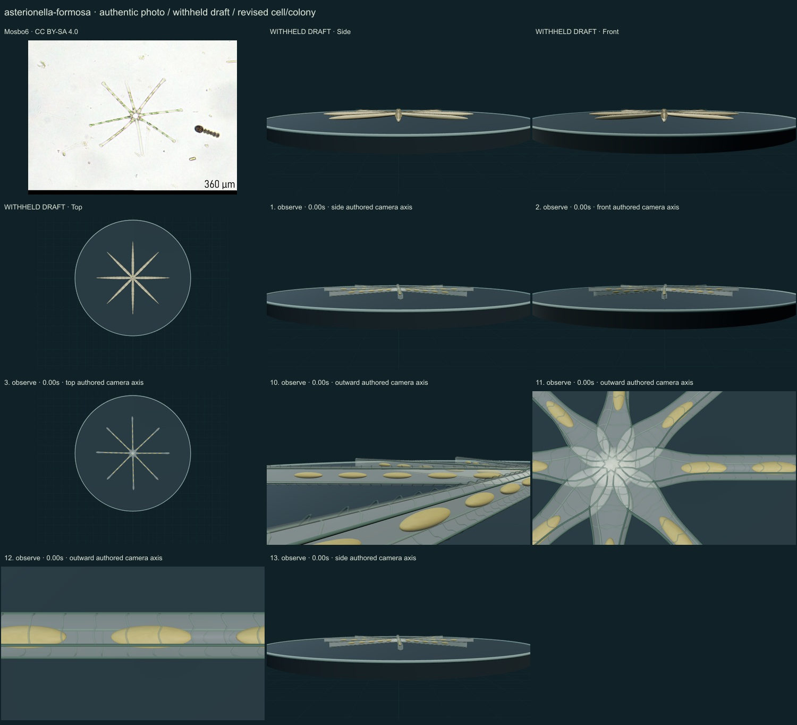
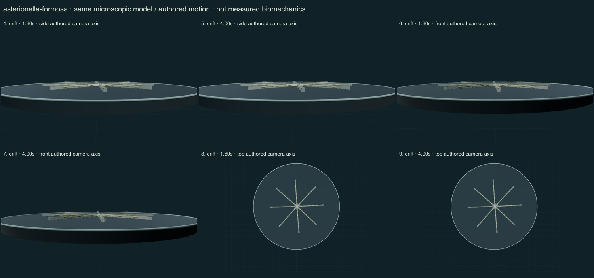

PhenoVoxel Archive · v0.6.26 · October25,2026
300 records after verified publication; all50 original held drafts have initial corrections, including all46 in the renewed foreground request.250 additional species remain to550. Release register.
Mosbo6 · CC BY-SA 4.0. Source-labelled real organism reference; preparation, life-stage, location and selected phenotype do not establish all species variation or measured 3D anatomy. Resized inside 1000 px, flattened and JPEG encoded; no generative alteration.
Exact source/download/derivative checksums and crop regions are preserved in the linked data. Tabellaria crops contain only panelg; Rhodospirillum contains only Figure1a and retains strain labels/scale. No other copyrighted reference figures are redistributed. Source photographs are authentic, with no generated organisms.
Eight long narrow heteropolar frustules radiate from enlarged foot-pole attachment cues. Separate paired silica walls and selected golden plastid bodies replace a thick opaque star.
Thin separate silica walls, unequal foot/head-pole outlines and selected golden intracellular cues replace a thick opaque star. Photographic background organisms are excluded from the species model.
Remaining: The eight-arm arrangement and inner attachment cluster remain too regular and partly overlap. Intracellular bodies are idealized, fine striae and mucilage ultrastructure are incomplete, and natural silica/illumination optics and dimensions are unmeasured. The low side/front views are inherently edge-on; drift is authored.
The entire retained colony changes position/orientation mildly as an external drift illustration. Individual cells do not swim or rotate independently; no flow solver.
Partly stylized, unmeasured educational reconstructions. Silica/envelope optics, fine ultrastructure, proportions and motion timing remain approximate. No independent specialist validation, accuracy percentage, measured biomechanics, physiological solver or simulated microscopy. Source preparation and taxonomic opinions are explicit.
13 actual final nonblank main-viewer states individually inspected on two labelled sheets: authentic micrograph, withheld draft, whole-model side/front/top, six representative motion states, three partial detail views and Observe reset.


Partly stylized, unmeasured educational reconstructions. Silica/envelope optics, fine ultrastructure, proportions and motion timing remain approximate. No independent specialist validation, accuracy percentage, measured biomechanics, physiological solver or simulated microscopy. Source preparation and taxonomic opinions are explicit. Prior293 species objects and credited wolf/tiger meshes remain unchanged. Recorded occurrences are not native ranges; two unresolved name/aggregator associations are withheld. Protista/Monera are legacy reporting conveniences, Bacteria and Archaea separate domains.
Original geometry/controller MIT. Authentic photo portions retain their credited license. Model-only frames are original rendered geometry.
Exact findings, source scopes, screenshot and photo hashes